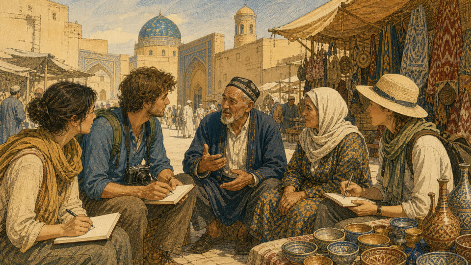

この部について
「地球の課題までフィールドワーQ部」は、海外の社会課題を現地で見て、聞いて、考える、実践型フィールドワーク・コミュニティです。
単なる観光旅行でも、教室の中だけの社会課題研究でもありません。参加者自身が問いを立て、企業、行政、教育機関、NPO、住民などとの対話を通じて、その土地の課題と可能性を多角的に読み解きます。
社会課題を「遠い国の問題」として眺めるのではなく、自分の仕事、事業、研究、キャリアへつながる問いとして持ち帰ることを目指します。
冒険性
観光では終わらない。地球規模の課題の現場まで踏み込む
実践性
現地観察、対話、調査を重視する
問い
答えを受け取るのではなく、問いを発見する
親しみやすさ
専門家だけでなく、仲間と参加できる
答えを教えてもらう旅ではなく、自分たちで問いを見つける旅。
なぜフィールドワークなのか
ニュースやデータから社会課題を知ることはできます。しかし、現地の空気、人々の表情、産業の動き、暮らしの実感までは、画面越しにはわかりません。この部では、課題だけでなく、その土地の文化、人々の強さ、変化の兆し、未来の可能性まで見に行きます。
一次情報に触れる
現場でしか得られない一次情報に触れる
当事者と対話する
当事者や現地組織から直接話を聞く
仲間と議論する
異なる専門性を持つ仲間と議論する
解像度を高める
世界を見る解像度を高める
仕事につなげる
学びを仕事、研究、事業、キャリアにつなげる
知的な仲間と出会う
帰国後も続く知的な仲間と出会う
帰国すると、ニュースの見え方が変わる。
活動の流れ
-
渡航12〜10ヶ月前
テーマと渡航先を決める
参加者の関心と、その地域で起きている社会・経済の変化をもとに、渡航先と探究テーマの方向性を定めます。
準備タスク
- 参加者の関心を集約
- 対象地域の変化を調査
- 探究テーマ仮決め
-
渡航6ヶ月前
訪問先を打診し、渡航を手配する
企業・大学・行政・NPOなど訪問候補にアポイントを打診しながら、旅行会社や現地コーディネーターの選定、概算費用や定員といった渡航の骨組みを固めます。
準備タスク
- 企業・大学・行政・NPOへアポイント依頼
- 旅行会社・現地コーディネーター選定
- 概算費用と定員の確定
-
渡航3ヶ月前
事前学習と言語の基礎
歴史・文化・産業・社会課題を学ぶ勉強会を重ね、現地語の挨拶や数字など基礎的なコミュニケーションを身につけます。
準備タスク
- 歴史・文化・産業・社会課題の勉強会
- 現地語（ロシア語・ウズベク語）の挨拶と数字
- 関連文献の共有
-
渡航2〜1ヶ月前
問いを固め、実務を整える
事前学習をもとに各自が「現地で確かめたい問い」を確定し、航空券やビザ、海外保険の手配、訪問先としおりの最終確認など渡航前の実務を整えます。
準備タスク
- 各自の「現地で確かめたい問い」を確定
- 航空券・ビザ・海外保険
- 訪問先の最終確定としおり作成
-

渡航（7〜10日間）現地で見る・聞く・対話する
企業、大学、NPO、行政、住民などを訪ね、観察とインタビューを重ねます。毎晩の気づきを仲間と共有し、文化や自然を体験する時間もあわせて組み込みます。
準備タスク
- 訪問とインタビュー
- 毎晩の気づき共有
- 文化・自然の体験
-
帰国後1〜2ヶ月
持ち帰り、発信する
レポート執筆や報告会、記事・SNSでの発信を通じて学びを仕事や新しい活動につなげ、次回フィールドワークのテーマの種もあわせて探ります。
準備タスク
- レポート執筆
- 報告会
- 記事・SNS発信
- 次回テーマの種を出す
探究フィールドマップ
タブを切り替えて第1回候補の問いとルートを見る、テーマチップで将来のフィールドを絞り込む ― 実際に操作してみてください。
現地で考える問い
- アラル海の縮小は、人々の暮らしと産業をどう変えたのか
- 綿花産業と水資源の問題は、現在どう変化しているのか
- 若い人口とIT人材は、新しい成長の力になるのか
- 歴史都市の観光開発は、文化保存と両立できるのか
訪問ルート候補
綿花産業と旧ソ連圏の面影が残る古都から、アラル海の縮小が最も色濃く現れるムイナクまでを巡ります。
ウズベキスタン・カザフスタン共通の探究テーマ
現地で考える問い
- 石油・ガス・鉱物資源への依存から転換できるのか
- 脱炭素と経済成長をどう両立するのか
- 資源による豊かさは、国内にどのように分配されているのか
- 中央アジアの物流と地政学で、どのような役割を担うのか
自然・文化の訪問候補
資源国の産業を見るだけでなく、雄大な自然を体感する時間もルートに組み込みます。
※キルギスは初回には含めず、将来の拡張候補とします。
ウズベキスタン・カザフスタン共通の探究テーマ
テーマで絞り込む
チップをクリックすると、該当する地域カードがハイライトされます（複数選択可）。
この部ならではの違い
参加してほしい人
- 世界の社会課題に関心がある
- 普通の海外旅行より一歩踏み込んだ体験をしたい
- 新興国の産業やビジネスに興味がある
- 社会課題を仕事や事業につなげたい
- 現地の人や組織と直接対話してみたい
- 普段の仕事から離れ、視野を広げたい
- 卒業後も学び続けられる仲間がほしい
専門知識・経験不問。必要なのは好奇心と現地を尊重する姿勢です。
発起人メッセージ
第1回に関心登録する
渡航先や実施時期などの詳細は今後の説明会でご案内します。まずは関心登録だけでも大歓迎です。
関わり方について
現時点での関わりたい形を教えてください。迷う場合は「まずは説明会に参加したい」で構いません。